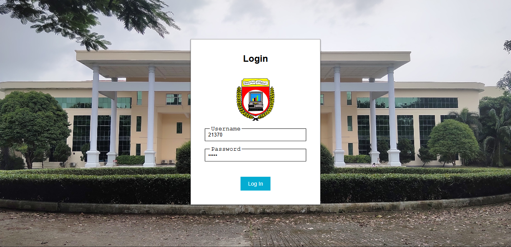
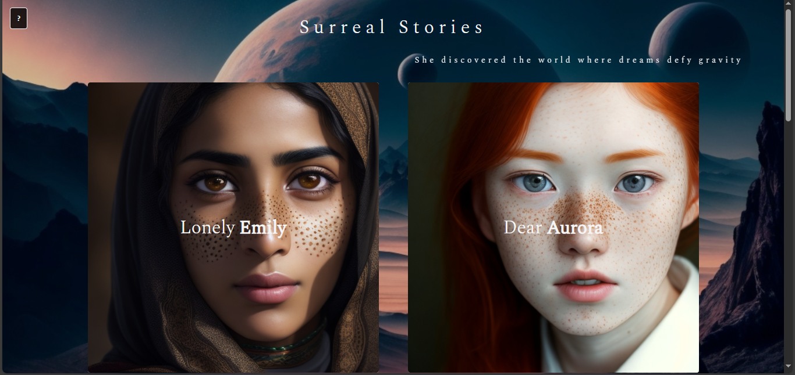

Teacher Assessment System
The project aimed to facilitate the semester-based teacher-assessment process of University of Computer Studies, Yangon. It is written in PHP as the term project of semester-IV web development class.

Surreal Stories
The client-side rendered story telling website built with VueJS. This is one of the earliest projects in my programming journey, and it is written as a part of learning VueJS and to experiment with CSS transitions.